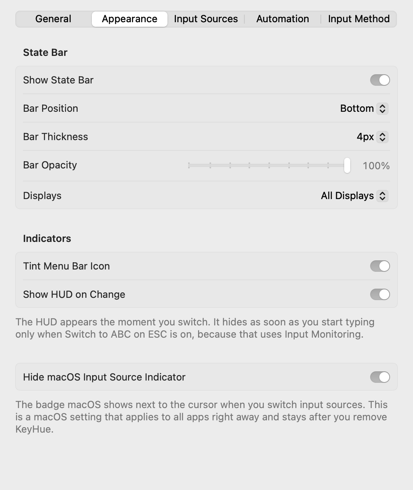

KeyHue manual
KeyHue shows the input source your Mac is using as a thin colored line at the edge of the screen, so you can tell Korean from English (or Japanese, Russian, …) before you start typing.
Install
- Download
Get KeyHue.zip (always the latest version) and unzip it.
- Move it to Applications
Drag KeyHue.app into your Applications folder. KeyHue runs on macOS 13 Ventura or later, on Apple silicon and Intel.
- Allow it to open
KeyHue isn't signed with an Apple Developer ID, so macOS blocks the first launch.
- macOS 15 Sequoia or later: open KeyHue once. When macOS says it can't be opened, click Done. Then go to System Settings › Privacy & Security, scroll down and click Open Anyway.
- macOS 13–14: Control-click (or right-click) KeyHue.app, choose Open, then click Open in the dialog.
- Or run this in Terminal:
xattr -dr com.apple.quarantine /Applications/KeyHue.app
You only need to do this once per version.
First launch
KeyHue appears as a chameleon in the menu bar near the clock. The chameleon takes the color of the current input source. Click it, or open KeyHue again, to get to the settings. While the settings window is open, KeyHue also shows in the Dock so you can ⌘Tab back to it. To keep it in the Dock all the time, turn on Show in Dock in the settings.
A thin line appears along the bottom of every display. Switch input sources the way you usually do (Caps Lock, Control-Space or the 한/A key) and watch the line change color.
If you pressed the switch key and the color didn't change, the switch didn't happen. That's the point: KeyHue only shows what macOS actually selected.
Reading the colors
Every input source enabled in System Settings › Keyboard › Input Sources gets its own color. Until you choose your own, KeyHue uses these:
- Blue: ABC, U.S., German, Dvorak and other Latin layouts
- Green: Korean
- Orange: Japanese
- Purple: Chinese
- Teal: Russian and other Cyrillic layouts
- Red: Caps Lock is on. This wins over every input source color.
Other languages get their own color automatically, and it stays the same every time. Red is kept for Caps Lock.
HUD
With Show HUD on Change on, the chameleon appears briefly near the bottom of the screen in the new input source's color whenever you switch. It works the same way for every language. It appears the moment you switch and is gone about a quarter of a second later. If Switch to ABC on ESC is on, it also hides as soon as you start typing.

ABC 
Korean 
Japanese 
Caps Lock
The menu
Click the chameleon to open the menu. Items with a ✓ are turned on.
| Item | What it does |
|---|---|
| Current Input | The input source KeyHue sees right now, with its color. |
| Show State Bar | Shows or hides the colored line. |
| When Switching Apps | Keep As Is, Switch to ABC (your default input source), or Restore Last Input Source used in that app. |
| When Switching Windows in the Same App | The same three choices for windows and tabs of one app. Needs Accessibility. |
| Forget Remembered Inputs | Clears what KeyHue remembered for apps and windows. Shown when you restore. |
| Switch to ABC on ESC | Switches to your default input source when you press ESC. Needs Input Monitoring. |
| Default Input Source | Where the automatic switches go. Automatic picks ABC, then U.S., then another Latin layout. |
| Show HUD on Change | Briefly shows the chameleon in the new input source's color when you switch. |
| Switch to ABC When Leaving Text Field | Experimental. Needs Accessibility. |
| Settings… (⌘,) | Opens the settings window with every option. The line's look, colors, Show in Dock and Launch at Login are changed there. |
| Show Log File | Reveals the log file in Finder, to attach when you report a problem. |
The ABC in some item names changes to whatever you set as your default input source.
Settings
Choose Settings… in the menu, or press ⌘, while the menu is open.
General

- Language changes KeyHue's own language right away, without restarting. System Default follows macOS. Input source names still come from macOS in its language.
- Show in Dock is off by default, so KeyHue never takes focus away from your other apps. It still shows in the Dock while the settings window is open.
- Show Log File: reveals the log to attach when you report something odd.
Appearance

- Bar Position: bottom is the default. Top is easier to notice but covers the edge of the menu bar.
- Bar Thickness and Bar Opacity work well together, for example a thick line at 60% opacity.
- Displays: show the line on all displays, or only on the one you're working on.
- Hide macOS Input Source Indicator: hides the badge macOS shows next to the cursor when you switch input sources. This is a macOS setting that applies to all apps right away and stays after you remove KeyHue, so turn this off to bring the badge back.
Input Sources

- Click a color well to pick any color. Reset appears next to colors you changed.
- Default Input Source is where automatic switching goes. Set it to German, for example, if that's the layout you type commands in.
- Add or remove input sources in System Settings. The list here updates on its own.
Automation

Switching back automatically
These options put the right input source back, so shortcuts and commands don't come out in the wrong language.
When you switch apps or windows
Pick one choice for When Switching Apps and one for When Switching Windows in the Same App:
- Keep As Is: KeyHue does nothing.
- Switch to ABC: always go back to your default input source.
- Restore Last Input Source: bring back what you last used there, so you can keep Korean in one Terminal window and English in another. Apps and windows KeyHue hasn't seen yet, like a new window from ⌘N, switch to ABC.
If both are set to restore, coming back from another app restores the front window first, then the app. App choices need no permission and apps are remembered across restarts. The window choices need Accessibility (System Settings › Privacy & Security › Accessibility). KeyHue watches only for the app's main window changing, so floating panels and dialogs don't count, and it never reads window titles or contents. Because of that, it can't recognize a window after the app or KeyHue restarts, so windows are remembered only until KeyHue quits.
When you press ESC
Handy in Vim, VS Code and terminals. The first time you turn it on, KeyHue explains why it needs Input Monitoring and opens the system prompt.
- Go to System Settings › Privacy & Security › Input Monitoring.
- Turn on KeyHue.
- If the option still shows a dash (–) in the menu, quit and reopen KeyHue.
When you leave a text field (experimental)
Needs Accessibility (System Settings › Privacy & Security › Accessibility). It works in most native Mac apps. In Chrome and some Electron apps it may not.
When Korean and English are mixed up (experimental, for Korean input)
This option is for people who type Korean. It's shown only when both 2-Set Korean and a QWERTY English layout such as ABC are enabled, so you won't see it otherwise. When a word looks like it's meant for the other language, for example dkssud (안녕) typed in ABC or ㅗ디ㅣㅐ (hello) typed in Korean, KeyHue usually notices within the first 3–4 keys (dks → “안…?”) and otherwise when you finish the word with Space or Return. A small message near the bottom of the screen shows the word in that language (for example “안녕?”) for a moment, and the bar blinks a few times in that language's color. KeyHue doesn't change what you typed or switch the input source. Words you corrected with Delete, very short words, and words mixed with digits or symbols are skipped to avoid false alarms. Needs Input Monitoring, like the ESC option. KeyHue reads only key positions, keeps the current word in memory, and discards it when the word ends. So that commands like dirname aren't mistaken for Korean, it also reads the file names in the system and Homebrew command folders. Turn off Show a Message to only blink the bar.
Update and uninstall
To update, quit KeyHue from its menu, download the latest version, and replace KeyHue.app in Applications. Your settings stay. If you use the ESC or text field options, you may need to allow the permission again after updating.
To uninstall, quit KeyHue, turn off Launch at Login, and move KeyHue.app to the Trash. To also remove its settings, run defaults delete io.github.sejoung.keyhue in Terminal and remove KeyHue from Input Monitoring and Accessibility in System Settings.
Troubleshooting
I can't see the chameleon in the menu bar
On MacBooks with a notch, menu bar icons can hide behind it when there are many. Quit a few menu bar apps, or hold ⌘ and drag icons to rearrange them. On macOS 26 or later, also check System Settings › Menu Bar. Even when the icon is hidden, opening KeyHue again from Spotlight or the Applications folder shows the settings window.
The color doesn't change when I switch
KeyHue follows the input source macOS reports. Some input methods switch modes inside themselves without changing the input source (for example Shift in some Chinese input methods), and KeyHue can't see those.
ESC doesn't switch anymore after an update
macOS ties Input Monitoring to the app's signature, and each KeyHue update has a new one, so the earlier approval stops applying even if System Settings still shows KeyHue turned on. KeyHue tells you when this happens. Choose Allow Again… (or Grant Input Monitoring Access… in the menu), then turn on KeyHue in System Settings › Privacy & Security › Input Monitoring. The same applies to Accessibility for the text field option.
macOS says KeyHue is damaged or can't be checked
That's the first-launch block for apps without an Apple Developer ID. Follow step 3 in Install.
I want to report something odd
Choose Show Log File in the menu to reveal ~/Library/Logs/KeyHue/KeyHue.log in Finder. Attach it to a problem report along with roughly when it happened. It records the version, settings and permissions at launch, plus app and window switches, input source changes and automatic switches with timestamps, which helps find the cause.
Privacy
KeyHue never records what you type. It reads the selected input source, Caps Lock state and the active app. With the optional features on, it also checks whether a key is ESC, and what kind of element is in focus. It never reads the text. The experimental Korean/English mix-up warning looks at the key positions of the word you're typing, keeps that word in memory only until it ends, and never stores or logs it. The log file for troubleshooting (~/Library/Logs/KeyHue/, at most 3 MB) records app bundle IDs and input source switches, but never what you type or window titles, and it is never sent anywhere. KeyHue has no network code and no analytics, and the source code is open under the MIT License. The Korean syllable model for the Korean/English mix-up warning is derived from Korean Wikipedia (CC BY-SA 4.0).